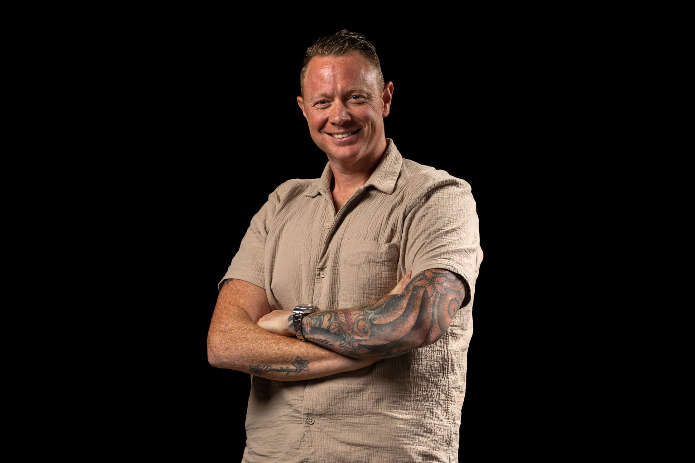
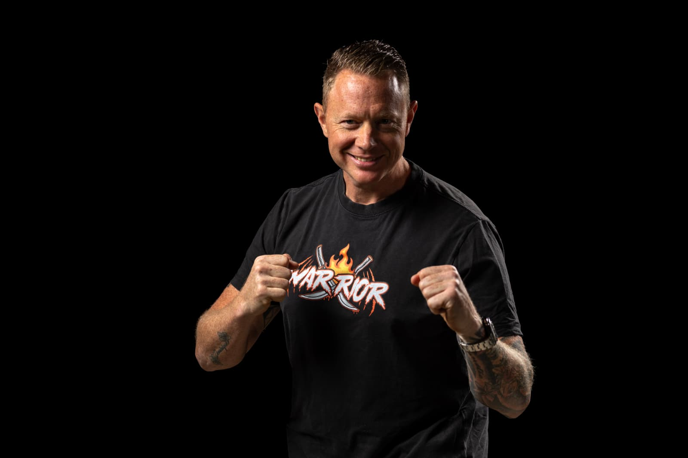
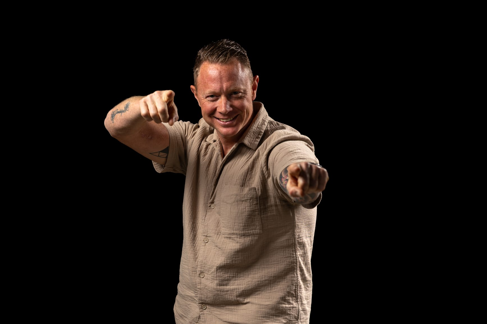
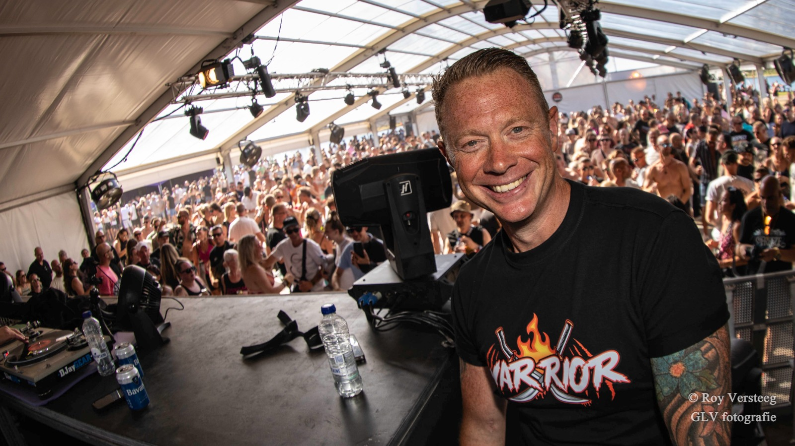
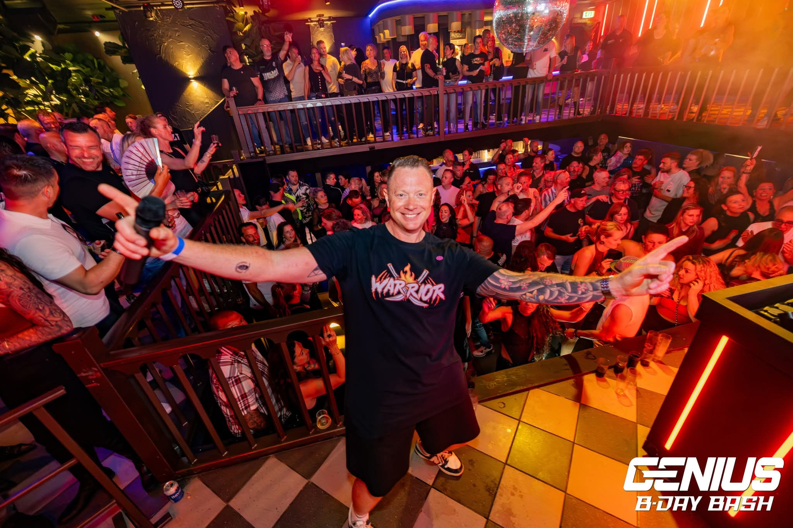
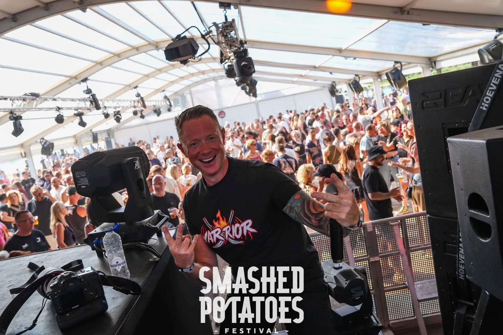

Presentator
Voor camera, promotievideo’s, bedrijfsfilms, reportages, productpresentaties en online content.
Kerstens Media & Presentatie
Professionele presentatie voor camera, podium en publiek door Ad Kerstens. Inzetbaar als presentator, eventhost, dagvoorzitter, interviewer, voice-over en MC.

Wat Kerstens doet
Kerstens Media & Presentatie helpt bedrijven, gemeenten, organisaties en evenementen om hun verhaal professioneel over te brengen. Niet door simpelweg een tekst voor te lezen, maar door contact te maken met het publiek en de juiste toon te vinden voor ieder moment.
Diensten
Eén vertrouwd gezicht en één herkenbare stem, inzetbaar op verschillende momenten en voor verschillende doelgroepen.
Voor camera, promotievideo’s, bedrijfsfilms, reportages, productpresentaties en online content.
Voor bedrijfsbijeenkomsten, openingen, sportevents, netwerkbijeenkomsten en publieksactiviteiten.
Programma’s begeleiden, sprekers introduceren, gesprekken leiden en zorgen voor rust, tempo en verbinding.
Stemwerk voor bedrijfsfilms, commercials, documentaires, promotievideo’s en andere audiovisuele producties.
Toegankelijke en natuurlijke interviews voor camera, op locatie en tijdens zakelijke of maatschappelijke evenementen.

Energiek podiumwerk voor festivals, feesten en muziekevenementen, met gevoel voor timing, publiek en programma.

Over Ad Kerstens
Mijn achtergrond ligt in het werken met mensen. Jarenlang was ik actief in de zorg en begeleiding, waarbij ik met uiteenlopende doelgroepen werkte. Daar leerde ik luisteren, schakelen en aansluiten bij verschillende mensen en situaties.
Tegelijkertijd bouwde ik ruime podiumervaring op als host en MC op evenementen. Die twee werelden komen nu samen in Kerstens Media & Presentatie: professioneel, toegankelijk en met energie.
Mijn uitgangspunt is altijd hetzelfde: begrijpen wat de opdrachtgever wil overbrengen en zorgen dat die boodschap op een natuurlijke, geloofwaardige en aansprekende manier bij het publiek terechtkomt.
Zien & horen
Presentatie, voice-over en live podiumwerk. Verschillende disciplines met één uitgangspunt: de boodschap van de opdrachtgever op een natuurlijke, professionele en energieke manier overbrengen.
Energiek & overtuigend. Een commerciële voice-over met tempo, karakter en een duidelijke boodschap.
Rustig & verhalend. Een natuurlijke vertelstijl die de luisteraar meeneemt in het verhaal.
Persoonlijk & betrokken. Een warme, geloofwaardige vertelstem waarbij inhoud en emotie centraal staan.
Live / MC
Mijn podiumervaring loopt van clubs en festivals tot grote evenementen. Zo heb ik onder andere mogen MC’en op Defqon.1, Decibel Outdoor en Vroeger Was Alles Beter. Die ervaring neem ik mee in ieder optreden: aanvoelen wat een publiek nodig heeft, weten wanneer je aanwezig moet zijn én wanneer juist niet, en met de juiste timing energie toevoegen aan het moment.
DEFQON.1 · DECIBEL OUTDOOR · VROEGER WAS ALLES BETER



SAMENWERKEN
Van gemeenten en maatschappelijke organisaties tot bedrijven en evenementen. Kerstens Media & Presentatie helpt verhalen, initiatieven en boodschappen op een toegankelijke en professionele manier bij het juiste publiek te brengen.
Voor de camera, op het podium, tijdens een bijeenkomst of vanuit de studio. Altijd passend bij de opdrachtgever, de doelgroep en het moment.
Voor wie
Contact
Laten we kennismaken en bekijken welke rol het beste past bij jouw organisatie, publiek en doelstelling.